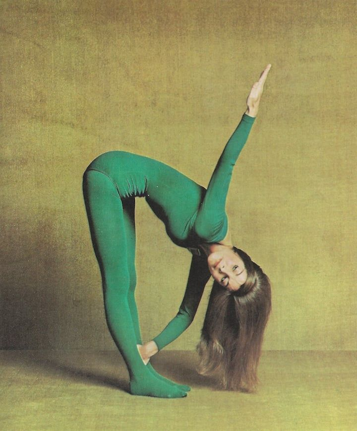
According to the National Institutes of Health (NIH), yoga is considered a method to improve the psychological and physiological status of humans. A review is conducted on the benefits of yoga in the modern literature. The common benefits are in physical fitness, mental state, attention, processing speed, memory, and cognitive functions. Studies have demonstrated the benefits of yoga for metabolic syndrome, including reductions in blood sugar, cholesterol, and blood pressure. Yoga reduces age-related deterioration in cardiovascular function, improves cardiac performance, and improves pulmonary function. The physiological mechanisms of yoga include reductions in stress and inflammation, increases in gray matter volume, improved neural network flexibility, and reorganization of the attentional network. Several studies have shown that yogic practices downregulate the hypothalamic-pituitary-adrenal axis and the sympathetic nervous system. Recent clinical in vivo experiments suggest that yoga enhances inhibitory mediator gamma-aminobutyric acid and enhances peripheral oxytocin levels. Serotonin and melatonin levels are also increased.
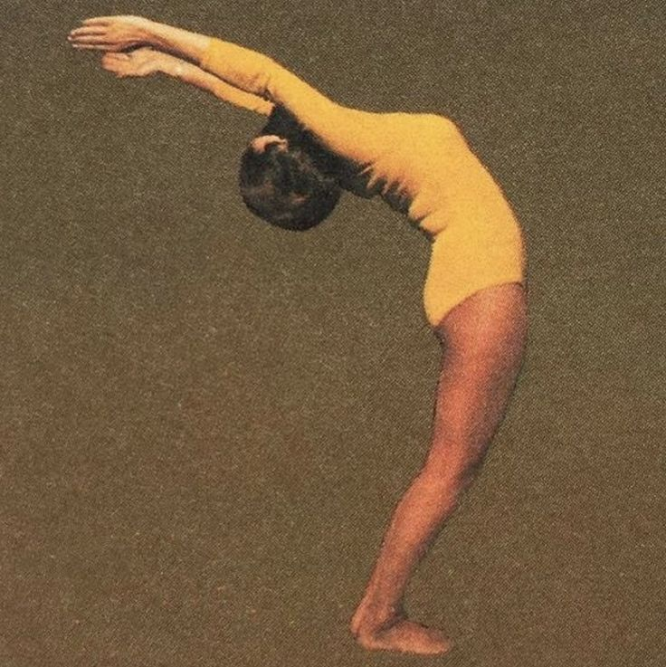
It is a core element of yoga, known as pranayama. Matching your breathing to the rhythm of your yoga posture can enable you to either hold or go deeper into a pose, for which you might otherwise be too restless or rigid. It cuts both ways: you could see the pose itself as a way to get deeper into the breathing, which is what will bring the clarity of mind that the whole things supposed to be about.
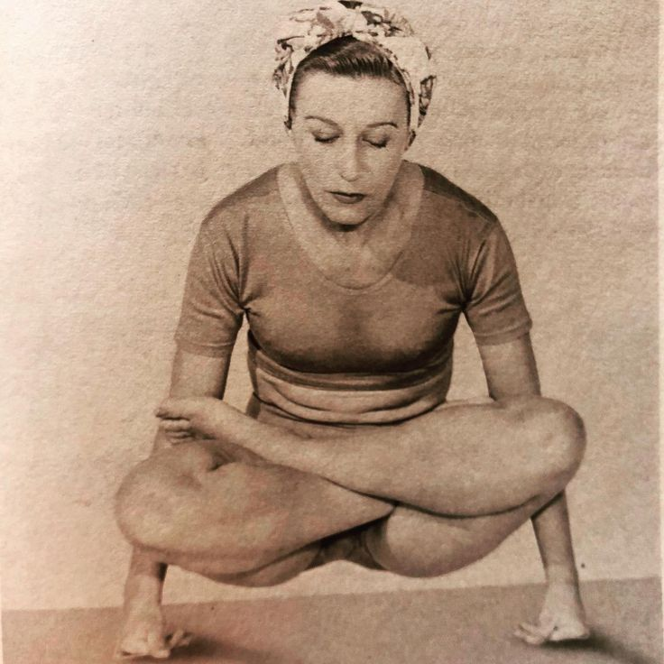
I would say you could do, but you could be missing a connection with your inner world, Ku Redler says. Nobodys walking around without feelings. Even if you dont believe in meditation, you cant deny the fact that you have thoughts and feelings and a physical body, and that those things are connected. The synchronous breathing element, however, is nonnegotiable. Its a really good bridge between mind and body. If youre not breathing, youre not doing yoga, De Belgeonne explains. Youre just throwing shapes. You might as well join a circus class.
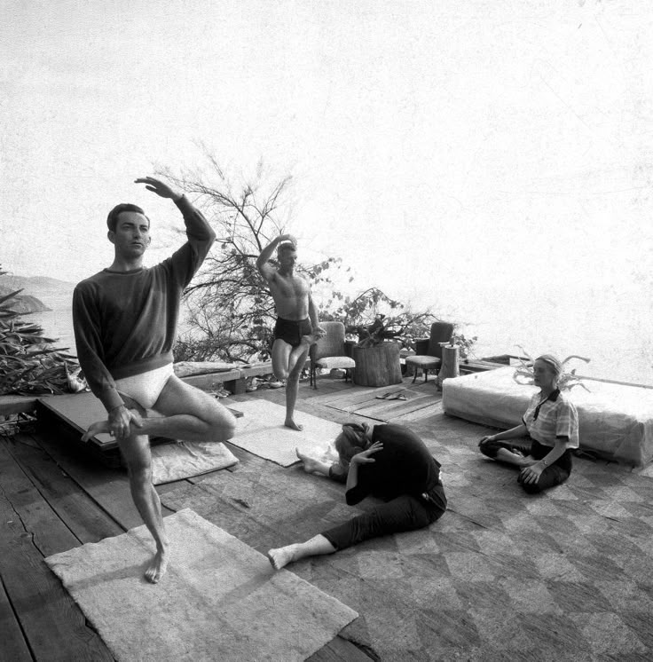
If we accept that the body is not a machine, and that mind and body are never separate, it starts to make sense that you may feel distress in your muscles, not your mind. As Blackaby writes: Patterns of distress are always expressed through tightening and holding. Part of being able to hear your body's signals comes from slowing down and focusing on your breath, which tricks you into a sort of meditation. And part will come from movement, paying attention to the quality of the movement, not the outcome, De Belgeonne says.
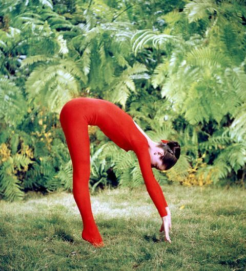
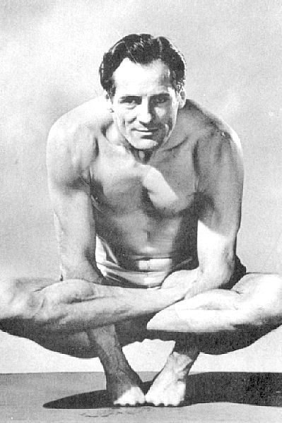
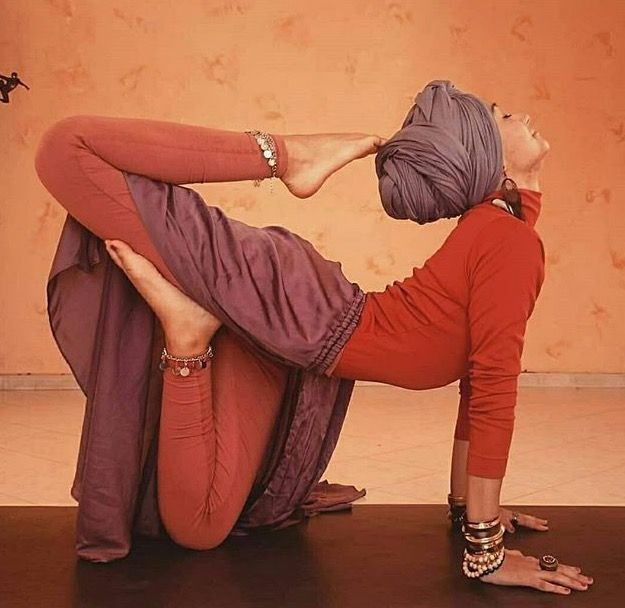
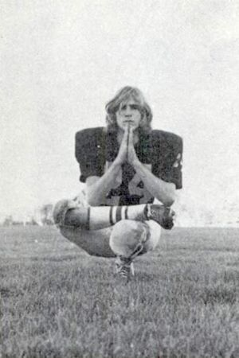
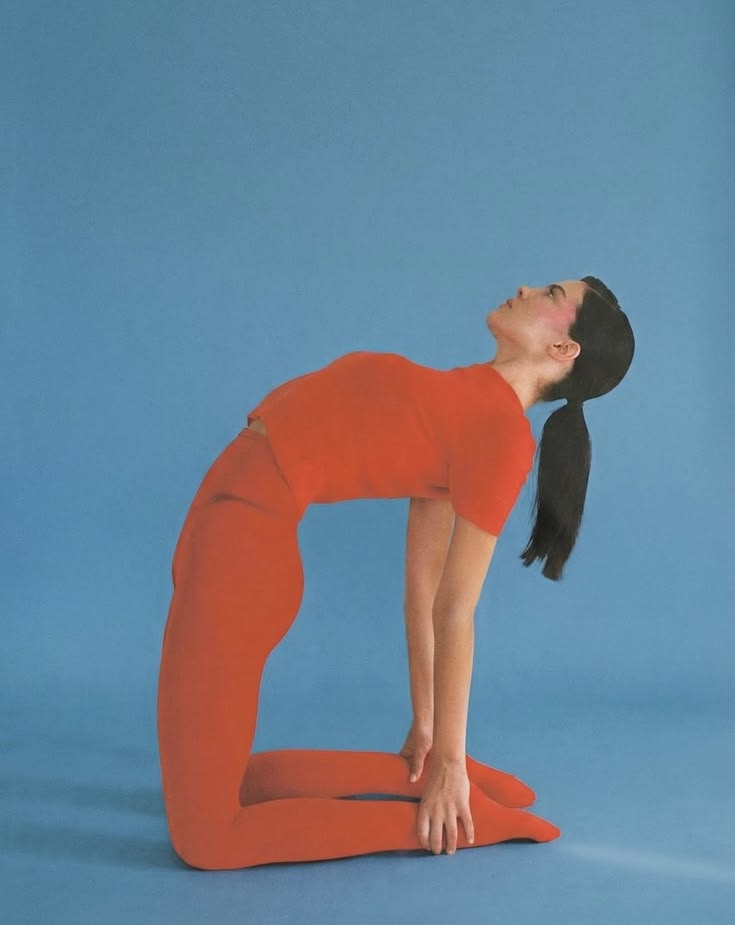
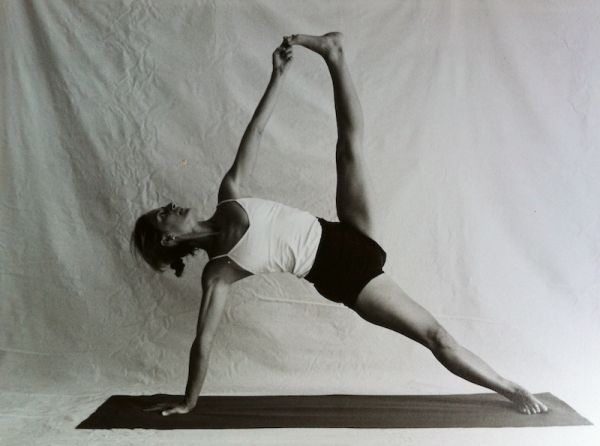
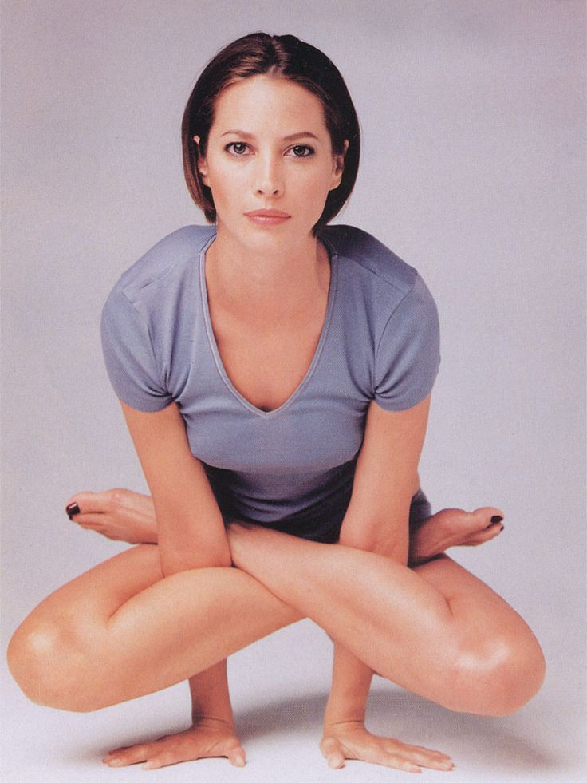
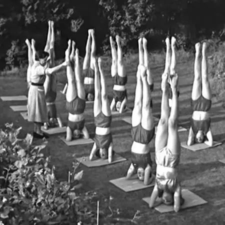
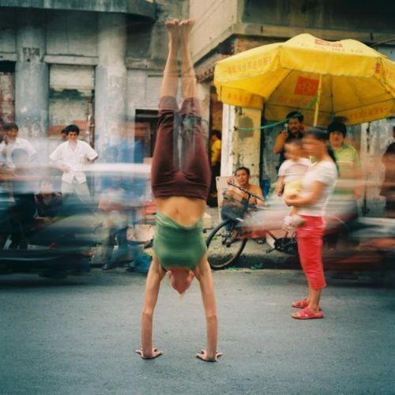
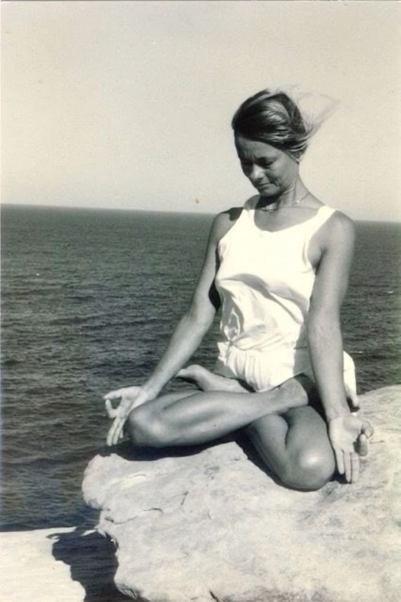